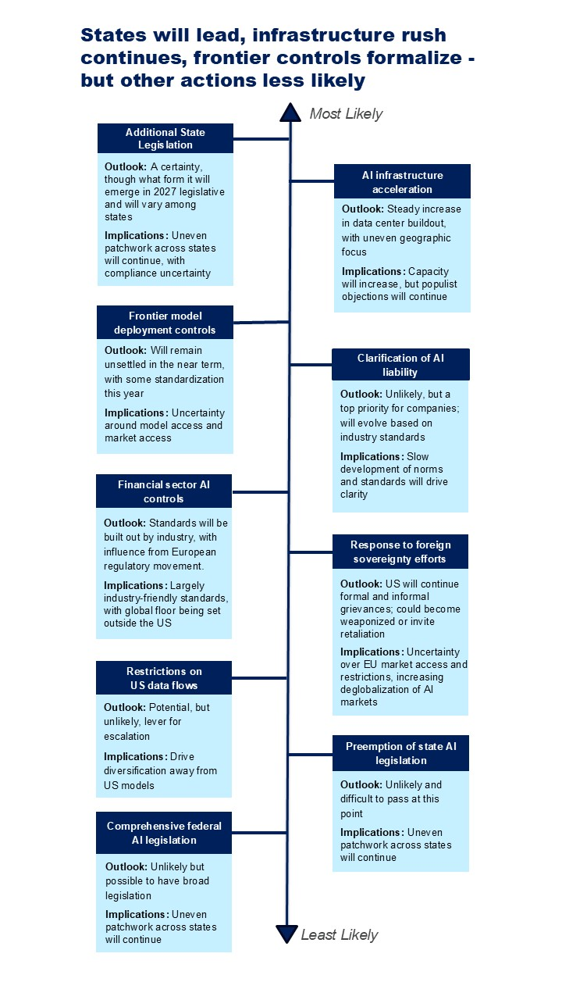

US AI policy is in a holding pattern—the deregulatory, executive-driven approach persists absent a triggering event that forces a Washington consensus—though President Donald Trump’s willingness to act unilaterally on issues like model access and infrastructure means the landscape can shift quickly even without one.
Congress is on the sidelines, leaving states, courts, and executive orders to form the basis of policy and governance across trade, data flows, deployment, financial oversight, liability, and infrastructure.
This report outlines the expected direction of US AI policy through 2027, covering national security, frontier-model oversight, federal and state legislation, and sector-specific regulation. Across all areas, a handful of key triggers — including a dual-use or cyber incident, agentic fraud, a breakthrough from China, or lobbying tied to frontier lab IPOs — could prompt sudden policy shifts.
President Donald Trump’s administration is prioritizing rapid AI deployment and competition with China, while relying heavily on executive authority, informal pressure, and national-security tools rather than more durable legislation. Congress remains unlikely to produce a federal framework, leaving states, courts, sector regulators, and executive agencies to shape the operating environment. The main risk for companies and investors is a series of abrupt policy shifts triggered by security incidents, China-related shocks, market failures, or high-profile harms.
This note assesses the likely trajectory of US AI policy across national security and frontier-model controls, federal and state legislative activity, and infrastructure and sector-specific regulation, identifying the plausible approaches in each area and their implications.
